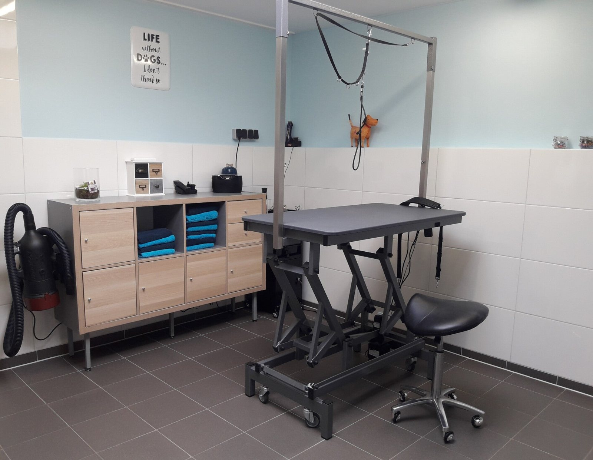

Behandelingen
Wassen, vachtverzorging en nagels knippen, met de grootste zorg en aandacht. Voor elke hond, ongeacht ras of grootte.
Wat ik voor uw hond doe
Ik ben gespecialiseerd in het wassen en verzorgen van de vacht. De prijs hangt af van de grootte en de vacht van uw hond: vraag gerust een prijsopgave.
Wassen & föhnen
Hondvriendelijke producten
Alleen hoogwaardige, hondvriendelijke shampoos en producten, speciaal voor de huid en vacht van uw hond. Tijdens de wasbeurt zorg ik dat uw hond zo comfortabel mogelijk is.
Scheren
Met de tondeuse, in verschillende lengtes
Scheren betekent niet dat uw hond kaal wordt. Hoe kort, hangt af van de conditie van de vacht en uiteraard van uw wens. Er zijn diverse mogelijkheden qua model.
Knippen in model
Met de effileerschaar
Niet geklitte honden kunnen in model worden geknipt. Dit vraagt wel onderhoud thuis: zeer regelmatig borstelen en kammen. Tussendoor kunt u uw hond ook brengen voor een kleine beurt.
Ontwollen & verharen
Wassen, blazen, borstelen en kammen
Bij rassen met veel onderwol blijft de wol anders in de vacht zitten en raakt die op de huid in de klit. Ook kortharige rassen die veel verharen zijn welkom: met de was- en blaasmethode verharen ze flink minder.
- Newfoundlander
- Berner Sennen
- Golden Retriever
- Keeshond
- Labrador
- Beagle
Nagels knippen
Snel en pijnloos
Nagels groeien continu en kunnen ongemak veroorzaken als ze te lang worden. Regelmatig knippen vermindert het risico op blessures.
Borstelen & ontklitten
Voor een klitvrije vacht
Goede vachtverzorging is essentieel voor de gezondheid van uw hond. Komt uw hond regelmatig, dan zie ik ook snel als er iets ongewoons aan huid of vacht is.
Kleine of grote beurt?
Kleine beurt
Een tussenbeurt: uw hond wordt gewassen, geföhnd en geborsteld, en de oogjes en voetjes worden vrij geknipt. Daarna ziet uw hond er weer fris en fruitig uit.
Grote beurt
Heeft uw hond veel klitten, dan kan een kleine beurt niet en is een grote beurt nodig. Twijfelt u? Stuur gerust een berichtje, dan kijk ik wat uw hond nodig heeft.
Na de behandeling: borstel uw hond regelmatig om de vacht in goede conditie te houden. Shampoo, borstels en kammen zijn bij de trimsalon te koop.
Veelgestelde vragen
Wat kost een trimbehandeling?
De kosten hangen af van de grootte en de vacht van uw hond. Neem contact op voor een prijsopgave.
Hoe lang duurt een trimbehandeling?
Elke hond is anders. Het hangt af van de behandeling die uw hond nodig heeft.
Heeft mijn hond speciale verzorging nodig na de behandeling?
Ik adviseer om uw hond regelmatig te borstelen om de vacht in goede conditie te houden. Shampoo, borstels en kammen zijn bij de trimsalon te koop.
Staat uw vraag er niet tussen?
Neem contact met mij op, dan geef ik een passend antwoord op uw vraag.
Afspraak maken
Wilt u uw hond laten trimmen? Stuur een WhatsApp, bel of vul het formulier in.
Trimsalon Djoek
Krijgt u mij niet te pakken? Spreek de voicemail in, dan bel ik zo snel mogelijk terug.